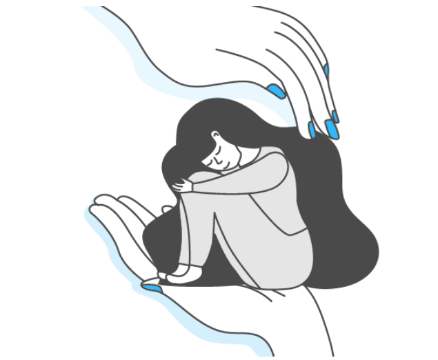
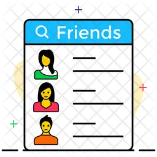

WELCOME TO HOME PAGE

Scream Alarm
Designed to be activated in emergency situations, the "Scream Alarm" is a loud and attention-grabbing alert that helps women draw attention to themselves when feeling threatened.
Fake Call Timer
A "Fake Call" feature is designed to help users create the illusion of receiving a genuine phone call.It is an applications to provide a discreet way for users to exit uncomfortable or unsafe situations.
Where Are You
GPS enables real-time tracking of a woman's location, providing accurate and up-to-date information about her whereabouts.Women's safety apps with GPS can send location-based safety alerts, notifying users about potential risks or unsafe areas.
Track Me
A "Track Me" page is crucial in emergencies as it allows others to locate you quickly and efficiently. In times of urgency, providing your location can expedite assistance, ensuring that help reaches you promptly. This feature is especially valuable for emergency services, friends, or family trying to assist you in a crisis, enhancing overall safety and response times.
 Friends List
A friend list is important in emergencies for quick and reliable contact. It enables efficient communication and coordination, ensuring that help can be sought or provided promptly when needed the most. Having a readily accessible friend list enhances support networks during critical situations.